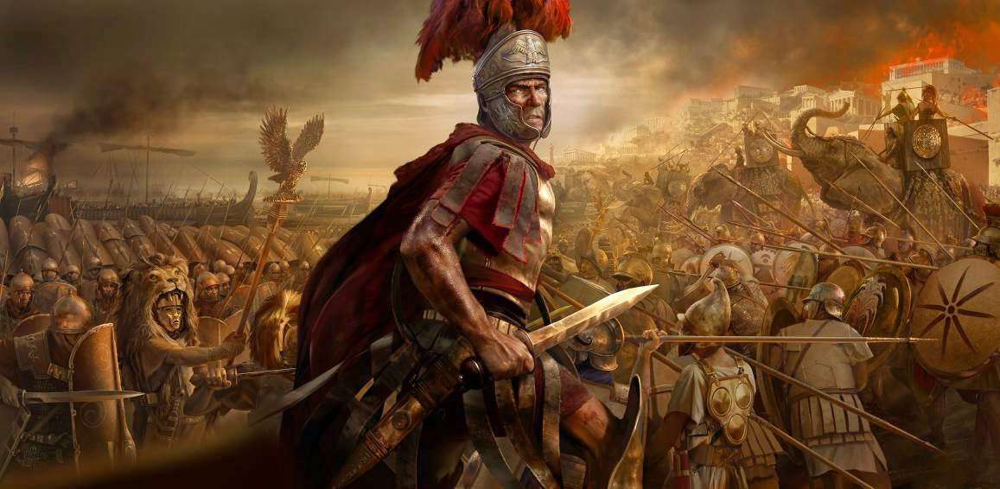
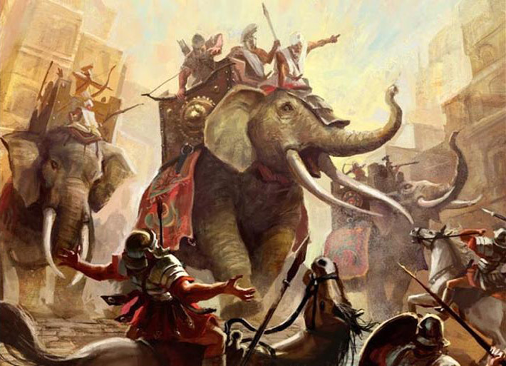

As Guerras de Roma | |
|---|---|
|
Apesar de não ser apenas uma batalha, as Guerras Púnicas são um conjunto de disputas que acabaram levando um grande nome, isso porque todas elas tiveram o mesmo fim. Tanto a Primeira Guerra Púnica, quanto a Segunda Guerra Púnica e a Terceira Guerra Púnica foram representadas pelos conflitos entre Roma e Cartago. As Guerras Púnicas no fim foram vencidas pelos romanos e tiveram como momento decisivo o conflito entre Cipião e Anibal na Batalha de Zama, que foi vencida pelos romanos e evitou que Roma fosse conquistada pelos exércitos de Anib As Guerras Macedônicas foram grandes conflitos que aconteceram nos séculos 2 e 3 a.C. entre Roma e Macedônia. Os conflitos tiveram início por uma disputa política e territorial, grande motivo das guerras da época. As Guerras Púnicas no fim foram vencidas pelos romanos e tiveram como momento decisivo o conflito entre Cipião e Anibal na Batalha de Zama, que foi vencida pelos romanos e evitou que Roma fosse conquistada pelos exércitos de Anibal. |
 |
|
Na primeira guerra macedônica, Filipe V da Macedônia enfrentou Roma, Etólia e Pérgamo, que estavam unidas em uma aliança. Essa primeira guerra terminou rapidamente porque Roma ainda estava muito envolvida com a segunda guerra púnica, que acontecia no mesmo período. Já a segunda guerra macedônica aconteceu quando Roma exigiu a retirada completa dos macedônios da Grécia. Filipe V aceitou a situação em partes porque ainda queria o controle de algumas partes da Grécia, o que não foi aceito pelos gregos. Filipe V foi derrotado definitivamente nesta última batalha. |
|
|  |
Após a situação, Perseu, filho de Filipe V assumiu o poder e mantinha uma relação bastante bem-sucedida com a Grécia, o que incomodava Roma. Isso gerou a terceira guerra macedônica, que culminou com a vitória romana. No fim a Macedônia acabou dividida em quatro repúblicas, todas elas sob o domínio romano. As Guerras da Gália nada mais foram do que uma série de campanhas de Júlio César que permitiram o estabelecimento do domínio romano sobre toda a Europa que ficava a oeste do rio Reno. Para isso César expulsou as tribos germânicas que ficavam ao sul e ao leste, as belgas ao norte e também os vênetos a oeste. Atravessou o Reno e reprimiu as costas norte e oeste. Invadiu duas vezes a Bretanha, considerada um refúgio belga e também uma ameaça para Roma. |